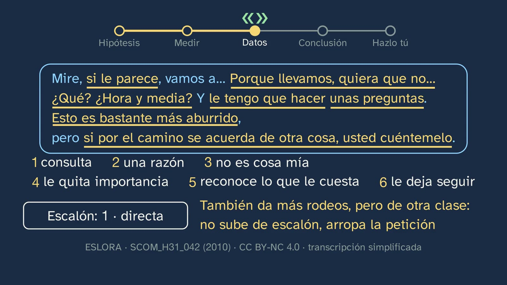
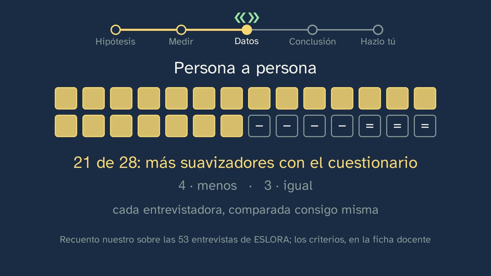
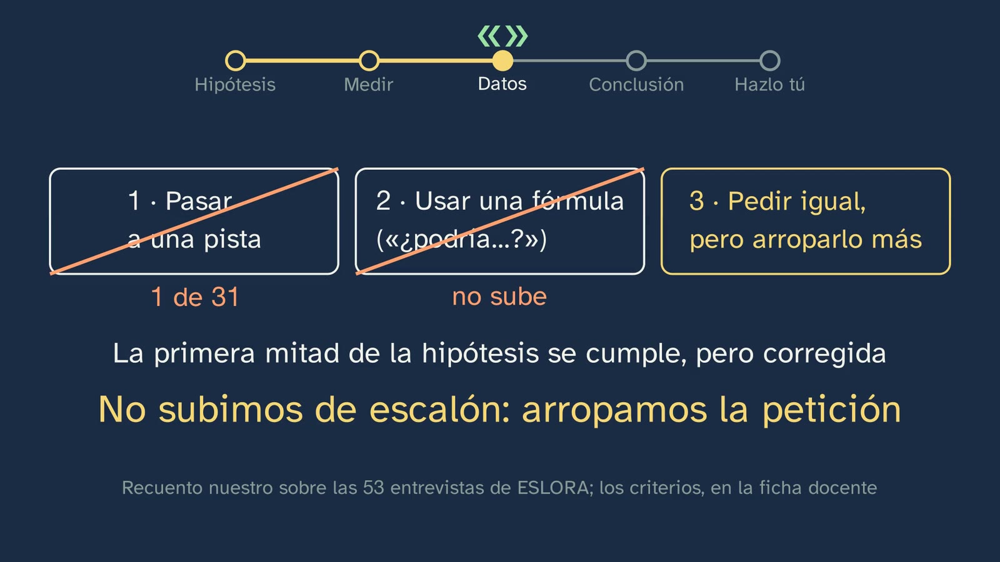

Lab: how do we ask for things?
In a nutshell
The channel's first language lab. It starts from something we all do without thinking: if your phone battery runs out, you tell your brother «déjame el cargador» ("lend me the charger"); you don't say it like that to someone you don't know. What does the way we ask depend on? Vera does not give the answer: she puts it to the test as a linguist would, in five stages that stay in view throughout the class.
- The hypothesis. The one announced in class 2, quoted word for word ("the more you ask for, and the less close you are to someone, the more you beat about the bush"), and where it comes from: for Brown and Levinson (1987, p. 76), how much a request weighs depends on the distance, the other person's power and what is being asked for, and the more it weighs, the more carefully it is asked.
- A ruler for measuring, before looking at the data. The three steps of the CCSARP project's scale (Blum-Kulka and Olshtain, 1984): the direct request, the conventionally indirect request (a fixed formula) and the hint. And the softeners, which at any step wrap the request up: what linguists call mitigation. Students try the ruler out on three real requests and bet on what we do when we ask for more.
- The data. The 53 interviews of the ESLORA corpus (University of Santiago de Compostela). Each interview is a natural experiment: the same researcher, with the same person and the same form of address, asks for what was agreed («cuénteme», "tell me") and, at the end, for something extra: that they answer a questionnaire.
- The count and the conclusion, with its limits. When more is asked for, the request carries more softeners (2.45 on average against 1.03; and, comparing each person with themselves, in 21 of 28 interviews), but it does not go up a step: almost never a hint, and the formula does not clearly go up. And with someone much older, usted as well. The hypothesis partly holds, and the data correct it. And the class says what cannot be concluded: they are only interviews, from Galicia and from one corpus; the classification is ours and was done once; the questionnaire comes with the tiredness of the end; and closeness and power could not be measured.
- Do it yourself. Ten requests the student has sent, in a table, to test what the corpus does not measure; and, if they speak another language, in that one too.
Along the way the typical mistake falls, "asking plainly is rude", with three pieces of evidence, and so does its flip side: more beating about the bush is not always more polite (Escandell, 1995).
What it adds that the textbooks don't. In our comparison with sixteen first-year Bachillerato textbook series, reviewed on 29 and 30/09/2026 for comparison only, none goes through the full cycle that competence 9 asks for: question, hypothesis, language data, analysis and conclusion. None names Brown and Levinson, and none uses the corpora of the RAE (the Spanish Royal Academy). This class goes through the whole cycle with an open corpus that can be used in the classroom tomorrow, with an explicit measuring ruler, a count of our own that can be checked (the criteria are on this sheet) and the honesty of saying where it stops. Students do not just learn what an indirect request is: they learn how an idea about language is put to the test, and how it is replicated.
Objective. By the end, students will be able to test a hypothesis about language with real data, and with their own messages: that the more you ask for, and the less close you are to someone, the more you beat about the bush; and to measure that beating about the bush with a three-step scale and by counting the softeners.
For readers outside Spain: the Bachillerato is the last two years of secondary school (ages 16–18), and ESO is the compulsory stage before it (ages 12–16). Spanish Language and Literature I is a core subject, taken by every student in the first year. The video is in Spanish, with English subtitles; the images on this sheet come from the video and keep their Spanish text. In Spain the decimal separator is a comma: the board writes 2,45 for 2.45. The class is about Spanish, so the examples stay in Spanish here, with an English gloss; the real requests from the ESLORA and COSER corpora are quoted word for word, and the English glosses are ours. Spanish has two ways of saying "you": tú, informal, and usted, formal, which takes the verb in the third person («cuéntame» and «cuénteme» both mean "tell me"). Sources written in English (Brown and Levinson, Blum-Kulka, Searle, Félix-Brasdefer…) are quoted in their original words; the decree and the other Spanish sources, in our translation. The BOE is Spain's Official State Gazette, where every law and decree is published.
Curriculum
Spain's Royal Decree 243/2022, Spanish Language and Literature I, a core subject in the first year of Bachillerato (consolidated text in the BOE; its latest update, of 02/07/2026, does not touch the Language annex, as was checked for class 2). Our translation of the official Spanish text.
| Element | What the decree says | Where the class works on it |
|---|---|---|
| Core knowledge (block B, "Communication", 1. Context) | "Components of the communicative event: degree of formality of the situation and its public or private nature; social distance between the interlocutors; communicative purposes and interpretation of intentions; channel of communication and non-verbal elements of communication." | Its centre: "social distance between the interlocutors" (Brown and Levinson's three weights, 3:23; age and usted, 11:09; closeness, which the corpus does not measure, 12:34) and "interpretation of intentions" (the hint about the hair, which the other girl takes as a reproach, 6:08; exercise 1) |
| Core knowledge (block B, 3. Processes) | "Formal oral and written interaction. Taking and giving the floor. Conversational cooperation and linguistic politeness." | Real requests in a formal oral interaction with distance, the interview; and politeness, in the typical mistake (13:17). "Taking and giving the floor", in class 4 |
| Core knowledge (block D, "Reflection on language") | "Drawing one's own conclusions about how the linguistic system works, with a specific metalanguage, from the observation, comparison and classification of communicative units and from the contrast between languages […]" | The class's whole method: observing (the corpus), classifying (the scale and the softeners), comparing (the same person with themselves, 10:15), concluding with a metalanguage (direct, conventional, hint, mitigation) and contrasting languages (Spanish and English, 13:45; "Do it yourself" in another language, 16:05) |
| Specific competence 3 | "To produce oral and multimodal texts, with preferential attention to academic texts, with rigour, fluency, coherence, cohesion and the appropriate register, following the conventions of the different discourse genres, and to take part in oral interactions with a cooperative and respectful attitude, both to build knowledge and establish personal bonds and to intervene actively and in an informed way in different social contexts." | Its description asks, at this stage, for "special attention to public situations, with greater social distance between the interlocutors", and says that "adapting oral uses to the communicative purpose and gauging their effects on the interlocutor is essential for effective communication, based on respect and mutual care". The class shows how a request is gauged according to who is asked and what is asked for |
| Specific competence 9 | "To consolidate and deepen explicit and systematic knowledge of the structure of the language and its uses, and to reflect autonomously on linguistic and discursive choices, with the appropriate terminology, in order to develop linguistic awareness, to increase the communicative repertoire and to improve skills both in oral and written production and in comprehension and critical interpretation." | Its description asks for the method the class follows: "the formulation of hypotheses and rules, the use of counterexamples", "through reflection and the carrying out of small research projects", "integrating the morphosyntactic, semantic and pragmatic levels". Here, pragmatics together with morphology: the imperative, the conditional and the polite imperfect, the diminutive, tú and usted |
| Criterion 3.2 | "To take part actively and appropriately in oral interactions (formal and informal) and in teamwork with attitudes of active listening and strategies of conversational cooperation and linguistic politeness." | Only as analysis: in the video students observe and classify politeness strategies, but do not take part in any oral interaction. To work on it properly, exercise 3 can be acted out in pairs (see the plan) and the activity is teamwork |
| Criterion 9.2 | "To explain and argue the interrelation between the communicative purpose and the linguistic choices of the sender, as well as their effects on the receiver, using explicit knowledge of the language and a specific metalanguage." | Exercise 3 (explaining each difference with distance, power and what is asked for), the hint and its effect on the listener (the hair, exercise 1) and the softeners named by their function (8:58) |
| Criterion 9.3 | "To prepare and present the results of small research projects on relevant aspects of how language works, formulating hypotheses and establishing generalisations, using the appropriate linguistic concepts and terminology and consulting dictionaries, handbooks and grammars autonomously." | "Do it yourself" (15:35) and this sheet's activity: a hypothesis, a table, a count and a conclusion that says how far it can be generalised ("what we can't conclude", 15:07) |
What students bring. From class 2: what an indirect speech act is («¿tienes hora?», "got the time?") and inference; two of its solutions come back today as examples of the scale. From lower secondary (ESO), the same core knowledge in years 3 and 4: "Informal and formal oral and written interaction: conversational cooperation and linguistic politeness" and the "Identification and use of the variations of deictic forms (formulas of familiarity and politeness) in relation to communicative situations" (Royal Decree 217/2022, Spanish Language and Literature, block B of years 3 and 4).
Where it comes back. Class 4, "Looking after the other's face: politeness", answers the question this one leaves open: why we wrap up what we ask for. Class 5, "Tú, usted and register", deals with the forms of address that are only reported here. Class 7 is the topic's second lab.
How the class is built
Video chapters
About eighteen minutes, in thirteen chapters. It is a language lab: Vera, without a lab coat, and the board, with the five-stop route at the top the whole time, so that students always know which stage of the method they are at. It follows the channel's teaching model for this subject: language observed with real data, first the hypothesis and the prediction, then the data and the conclusion with what cannot be concluded, and a "Do it yourself" with their own data.
| Chapter (minute) | What it does | Learning principle |
|---|---|---|
| What we'll see (0:00) | Vera says hello; the map of the topic, with the two labs marked by inverted commas («»); today, asking, with real data and the way a linguist works | Knowing where you are (multimedia learning: signalling) |
| What you already know (0:20) | What is an indirect speech act? A pause with a countdown. «¿Tienes hora?» ("Got the time?"): the form of a question, the act of asking; the listener infers it | Retrieval (Roediger and Karpicke, 2006), with an example that does not cross over into another topic |
| Solutions (0:44) | Class 2's three exercises, each with its question; «¿Puedes bajar la música?» ("Can you turn the music down?") and the sentence about the battery are kept aside, because they come back. To camera, the charger hook (2:23) | Spacing; the solutions, with their questions; the hook, with its context |
| The mission (2:33) | Today there is no answer: it is put to the test in five stages, which stay at the top | Taking part, not just watching (Hake, 1998); the problem before the explanation (Kapur, 2008) |
| The hypothesis (3:03) | Class 2's, quoted word for word and with its origin; Brown and Levinson's three weights; the sum, with its warning that it simplifies; power, the missing piece | First the intuition (the weights), then the exact version (the formula, with its page) |
| How to measure (3:55) | The three steps, with the charger; class 2's two sentences come back as a formula and as a hint; the softeners (linguists call it "mitigating"); beating about the bush means either going up a step or wrapping the request up. Stop and think with three real requests (pause at 5:50) and the bet (pause at 6:46) | The ruler, defined before looking at the data; a worked example and then practice; predicting before seeing (White and Gunstone, 1992) |
| The data (6:52) | ESLORA: what its researchers marked and what we looked for ourselves. The first interview: «Cuénteme…» and «¿Me va a permitir…?» ("Tell me…" and "Will you allow me…?"); what she asks for changes. Always? The second: counting the softeners (pause at 8:52); there are six, and the step does not go up | How do we know? (the natural experiment); stop and think; self-explanation ("if you count one or two fewer, that's fine too, as long as you can say why") |
| The count (9:39) | The interviewers themselves say that the questionnaire weighs more; the averages (1.03 against 2.45) and the bare requests (38 of 111 against 1 of 31); each person compared with themselves (21 of 28). The bet, settled: neither a hint nor a formula, but wrapping the request up. At the midpoint, Vera (11:04) | How do we know?; the mistake, in plain view: the student's bet is crossed out by the data (Muller et al., 2008); at the midpoint, the teacher |
| Distance (11:09) | Closeness cannot be measured in this corpus; age can: usted increases with age (0, 53 and 71%) and the step does not change. The form of address is not symmetrical. For closeness, a written study (Ballesteros, 2001), with its warning: several things change at once | How do we know?, with its limits said aloud |
| The typical mistake (13:17) | "Asking plainly is rude", crossed out with three pieces of evidence: the bare «cuénteme» to two older people, the conversations between young people (7 of 18) and the contrast with English (Díaz Pérez, 2005). And the other way round: more beating about the bush is not always more polite (Escandell, 1995), with the hair coming back | The mistake, in plain view, taken apart by reasoning |
| The conclusion (14:40) | The hypothesis, partly holding and corrected; "Did you get your bet right?"; what we can't conclude, in four lines | Visible thinking: what we know and what we don't |
| Do it yourself (15:35) | Ten of their own requests, in a five-column table, with three questions; another language; ESLORA, on its website | Taking part; learning to learn |
| Practice and keep thinking (16:24) | The summary, with a warning that it is a repetition; three exercises, one with a real request from COSER; the open question, with a countdown; the next class; goodbye | Spacing (exercise 1 retrieves inference); the open question |


A plan for a 50-minute lesson
| Minutes | What to do |
|---|---|
| 0–4 | No video. "Before you start" on the worksheet: the bet, in writing and with a reason. A show of hands: who chose each option? Write it on the board without comment. |
| 4–11 | Video from 0:00 to 5:50. At 0:27 (what is an indirect act?), the video's countdown is enough. Pause at 5:45: in pairs, the step of the three real requests (question 2 on the worksheet, one minute). |
| 11–16 | Video from 5:50 to 8:52. When the video reaches the bet (6:46), there is no need to pause: it is already written. Pause at 8:31: each pair underlines on the worksheet the softeners in the request to the 89-year-old man and decides the step (two minutes). |
| 16–21 | Video from 8:52 to 10:37: the six softeners, the count, the bet settled and Vera at the midpoint. Pause: go back to the board from the start (who got it right?) and question 5 on the worksheet (why compare each person with themselves). |
| 21–27 | Video from 11:09 to 14:02: distance and the typical mistake. Pause at 13:15, after the study of the neighbours and the friend: question 6 on the worksheet, by a show of hands. |
| 27–29 | Video from 14:40 to 14:57: the conclusion and what cannot be concluded. |
| 29–45 | The activity: the lab, in groups (below). |
| 45–50 | Video from 15:35 to the end (18:36): "Do it yourself", the summary, the exercises and the open question. "Do it yourself" and the exercises, for homework. If there is another lesson, exercise 3 is acted out in pairs: one asks for the extra day and the other plays the teacher and then the classmate (criterion 3.2). |
Typical mistakes and how they are handled
With an honest warning: none of these mistakes has been measured with Spanish Bachillerato students. The first is the one the topic sheet anticipates for this class; the others are predictable from what the class teaches, and each case says what lies behind it.
- "Asking plainly is rude". The authors who have compared Spanish and British English deny it, but as an interpretation, not as a measurement. Ballesteros (2001, p. 188) writes: "Personally, we consider that being structurally direct does not imply a greater degree of impoliteness"; and further on, that the stereotypes "'the Spanish are rude' or 'the English are hypocrites'" "are incorrect" (p. 193). Hickey and Vázquez Orta (1994, p. 285, in the paper's Spanish abstract): "the direct nature of an expression is not necessarily associated with impoliteness" (in the body of the paper, which is in English: "directness will not necessarily be associated with impoliteness", p. 281). Nobody, as far as we know, has measured how British people judge a Spanish imperative: that is why the class says "the linguists who have studied it maintain", not "it has been shown". The class takes it apart at 13:17 with three pieces of evidence: the two researchers ask a 70-year-old woman and an 89-year-old man with a bare «cuénteme», and their care lies in usted and in how they ask for what really weighs; between young people, 7 of 18 requests are made plainly; and in a written questionnaire, Spanish university students used the imperative in 9.3% of their requests and British students in 1.6% (Díaz Pérez, 2005, p. 292).
- "The more indirect, the more polite", or the hint as the most polite. This is Brown and Levinson's ranking: the more an act threatens, the higher the strategy chosen, and the hint (off record) ranks above negative politeness (1987, p. 60, assumption v; fig. 1, p. 69). Blum-Kulka, in experiments with speakers of Hebrew and English, found that the most polite was the conventionally indirect request and not the hint, as Brown and Levinson themselves (1987, p. 19) and Márquez Reiter (2000, p. 43) summarise it; the article is Blum-Kulka (1987). Escandell (1995, pp. 52–53) says it for Spanish: "the most indirect is not necessarily the most polite", because the allusion "may also contain a criticism". The class deals with it at 14:13 and ties it to a real case: the girl having her hair done complains, and the other defends herself because she hears a reproach (6:13 and 14:32). And in the data, the hint hardly appears: just one in 31 questionnaires.
- Confusing the scale with politeness ("the direct one is the rude one; the conventional one, the polite one"). The scale measures how much the words say of what is being asked for, that is, how much the other person has to infer; it does not measure politeness. Blum-Kulka measured separately how indirect a request seems and how polite it seems, and they do not match: hints came out as the most indirect and not as the most polite (the averages, in Yu, 2011, tables 2 and 3). In the class it shows in two cases: the request to the 89-year-old man is direct and carries six softeners (8:58), and the one to the 70-year-old woman is a formula with none (7:48). In the classroom, the best vaccine is the "Do it yourself" table: step and softeners go in two separate columns, and are asked about separately.
- Confusing distance with age, or with respect. For Brown and Levinson, social distance is a symmetrical relationship, and power an asymmetrical one (1987, p. 74). In the interviews, usted goes in one direction only: the researcher addresses the older person as usted, and they address her as tú (12:06), so it does not behave like a symmetrical distance. The class does not say what it is: it says that "age shows in the usted". If someone concludes that usted is respect, or that it is power, it is a good hypothesis, not a result (see the discussion in "For teachers"). And closeness is not age either: the corpus does not say who knew each other beforehand, and that is why the class does not measure it (11:18).
- «Si le importa» ("if you mind"): formula or softener? The same words play two roles. When the request goes inside the question («¿Le importa que le saque una foto?», "Do you mind if I take a photo of you?"), it is the conventional formula: the CCSARP scale gives "Would you mind moving your car, please?" as an example of its conventional strategy (Blum-Kulka and Olshtain, 1984, table 1). When it is added to a request that has already been made («Déjame el cargador, si no te importa», "Lend me the charger, if you don't mind"), it is a softener: it is the «si no te importa» added at the end that the class gives as an example (5:01). A practical test for the classroom, which is ours: remove it; if the request still stands, it was a softener; if it disappears, it was the formula. That is exactly the question in exercise 2.
- Counting any word as a softener. «Bueno», «pues», «a ver» or «mire» ("well", "so", "let's see", "look") appear in almost every turn, whether the speaker is asking for something or not, and the class's criteria do not count them; that is why the 89-year-old man's «Mire» is not among the six (8:58). A softener lightens what is asked for: it consults about it, justifies it, makes it small, acknowledges what it costs or makes up for it.
- Getting more out of the lab than it says ("Spaniards ask like this", "closeness doesn't matter"). The class guards against it aloud (15:07): they are interviews, from Galicia, from a single corpus, with a classification done once, and closeness and power have not been measured. That closeness has not been measured does not mean it does not weigh. In the activity, each group's conclusion always carries its line of "what we can't conclude".
Questions and solutions
Stop and think (in the video)
- What is an indirect speech act? (0:23; the pause, at 0:27) The video answers at 0:32: an act performed by way of another, which is Searle's definition ("cases in which one illocutionary act is performed indirectly by way of performing another", "Indirect Speech Acts", 1975, p. 60). «¿Tienes hora?» has the form of a question, but it asks for something; and the listener infers it. The best answers say both things: the form and the act.
- Three real requests: which step is each one on? (5:21; the pause, at 5:50) «Dadme ideas de vídeos» ("Give me ideas for videos"): 1, direct, with an imperative. «¿Me traes la bandejita?» ("Will you bring me the little tray?"): 2, conventional, the formula «¿me traes…?» ("will you bring me…?"), to which nobody answers just "yes"; and the diminutive, «bandejita» ("little tray", from bandeja), may soften it. «¡Ay! Me está doliendo el pelo. ¿Hay algo que me estés tirando?» ("Ow! My hair is hurting. Is there something you're pulling?"): 3, a hint, because it does not say what she wants (for the other girl to be careful doing her hair): she complains and asks. The proof that there is a request is in the answer: the other girl defends herself, «No, si paras tú de mover la cabeza, no hay nada que tire» ("No, if you stop moving your head, there's nothing pulling"). If someone says the last one is "a normal question", they are right about the form; ask them what the other girl understands, and why she defends herself.
- The bet: when what you ask for weighs more, what do we do? (6:22; the pause, at 6:46) Don't correct it yet: it is settled at 10:30. With the class's data, the right one is 3, asking the same way but wrapping it up more. Option 1 (a hint) hardly appears: one in 31. Option 2 (a formula) does not clearly go up: counting «si le parece» ("if that's all right with you") as a softener, it goes down (with the questionnaire, 3 of 31, one in ten; with what was agreed, 29 of 111, one in four); counting it as a formula, it stays almost the same (11 of 31 against 34 of 111). Those who chose 2 have in their favour the first example, the 70-year-old woman, which the class presents as an exception; and the discussion of «si le parece» (in "For teachers").
- How many softeners do you count? (8:47; the pause, at 8:52) Six, with their function (8:58): «si le parece» ("if that's all right with you": consults him), «porque llevamos… ¿hora y media?» ("because we've been going… an hour and a half?": a reason), «le tengo que hacer» ("I have to ask you": it is not my idea, I've been asked to), «unas preguntas» ("a few questions": plays it down), «esto es bastante más aburrido» ("this is a lot more boring": acknowledges what it costs him) and «si por el camino se acuerda de otra cosa, usted cuéntemelo» ("if along the way you remember something else, you tell me about it": lets him carry on with his own story). The step: 1, direct. Five or four also count if argued: «le tengo que hacer» can be seen as the request itself (an obligation, which on the scale is direct) and «unas preguntas» as a mere description. Counting «mire» ("look") does not (mistake 6).
- Did you get your bet right? (15:03) This is the moment to go back to what was written at the start. What matters is not getting it right, but being able to say which piece of data decides it.
- Does the hypothesis hold? And our correction? Can you find a counterexample? (15:57) The "Do it yourself" questions: their criteria, below, with those of the worksheet.



From the student worksheet
- Before you start: your bet. As in the video (above). At the end, the question is which piece of data made them change their mind or confirmed it: a good answer names one (the hint, 1 of 31; the formulas, which don't go up; the softeners, 21 of 28).
- While you watch the video.
- An act performed by way of another; «¿Tienes hora?» asks a question and makes a request.
- 1, 2 and 3, as above.
- What she asks for changes: what was agreed (telling about her life) against something that had not come up in the whole interview (the questionnaire). What stays the same is the researcher, the woman, the day and usted: distance and power. That is why it works as an experiment: by keeping the relationship fixed, the difference in how she asks can be put down to what she asks for. The best answers add what the class says later: the moment changes too, and at the end there is tiredness (15:19).
- The six above, on step 1.
- Because each interviewer has their own style, and because the two samples do not come from the same place: the 111 requests for what was agreed are the ones ESLORA annotated, and we looked for the 31 questionnaires ourselves in all the interviews. Comparing each person with themselves, style and relationship stay fixed.
- No. Between the neighbours and the friend, closeness, age and what is asked for all change at once (13:05). And in the same table of the study, 5 of 30 ask a stranger their own age plainly, almost as many as ask the friend, 6 of 30 (Ballesteros, 2001, table 2): closeness alone does not explain the 0 of 30 with the neighbours.
- Any of the four at 15:07, with a way of checking it: closeness and power, with their own messages (the "Do it yourself" columns); other regions, with a corpus from other cities (PRESEEA, in the resources); the classification, with a second judge who classifies the same requests without seeing the first; tiredness, by comparing with a high-weight request that comes at the start of an interview.
- Do it yourself: ten of your own requests. There is no solution: there are criteria. The table is complete and their own (only messages they sent, without names). Step and softeners are given separately (mistake 3). The questions afterwards are answered with their data, not the class's: "in my ten requests…". A well-explained counterexample is worth more than a confirmation: what they were asking for, who to and why they think it doesn't hold. And the conclusion says what it cannot conclude: ten requests, from one person, chosen by them. In another language, one request in each and one observation are enough (for example, whether in English they would use a formula where in Spanish they use an imperative); no result is expected.
Practice (the solutions open class 4)
- Order them from most direct to most roundabout, and give the step of each: «¿Me pasas la sal?», «Pásame la sal» and «Esto está un poco soso, ¿no?». Also say what the listener has to infer from the last one ("Will you pass me the salt?", "Pass me the salt" and "This is a bit bland, isn't it?").
- Solution. «Pásame la sal» (1, direct: an imperative) < «¿Me pasas la sal?» (2, conventional: the formula «¿me pasas…?», "will you pass me…?") < «Esto está un poco soso, ¿no?» (3, a hint: it neither names the salt nor asks for anything). Whoever hears the last one has to infer that they are being asked for the salt and, perhaps, a reproach to whoever cooked. As with every hint, the speaker can deny having asked for anything («sólo era un comentario», "it was just a comment"): it is what Brown and Levinson say of off-record requests, that the speaker "cannot be held to have committed myself to that intent" (1987, p. 69).
- Other answers that count. That the inference is "to add salt" or "to bring the salt closer"; that the situation decides whether there is a reproach (saying it at home, to whoever cooked, is not the same as saying it in a canteen). If someone sees «¿Me pasas la sal?» as a genuine question, remind them of class 2: nobody answers just "yes".
- Criteria. The order, the step of each and one reason per step; the inference, with its two parts (the request and the possible reproach). It retrieves the inference of classes 1 and 2.
- For teachers. The examples are invented for the class. The salt is Searle's classic example ("Can you reach the salt?", "Indirect Speech Acts", 1975, pp. 59–60), which is exactly step 2; and «soso, ¿no?» follows the model of Escandell's «Aquí hace un poco de frío, ¿no?» ("It's a bit cold in here, isn't it?"; 1995, p. 52), which the class quotes at 14:20.
- Count the softeners in this real request (an interviewer, to an 83-year-old man, in San José de Malcocinado, Medina-Sidonia, Cádiz): «Quería preguntarle si le importa que le saque una foto, aparte de lo que le hemos grabado, una fotito. [RISAS] Yo se la mando luego…». (COSER-1116-01, 2012, official transcript, p. 23; CC BY-NC-ND 4.0, literal text. Our English gloss, not part of the quoted text: "I wanted to ask you if you'd mind me taking a photo of you, apart from what we've recorded, a little photo. [LAUGHTER] I'll send it to you later…".)
- Solution. The step is 2, conventional: the request goes inside a question about whether it bothers him («si le importa que le saque una foto», "if you'd mind me taking a photo of you"), the same type as the CCSARP's "Would you mind…?". There are four softeners: «quería preguntarle» ("I wanted to ask you": the polite imperfect, which presents the request as something wanted, not as something demanded), «aparte de lo que le hemos grabado» ("apart from what we've recorded": a clarification that makes it clear this is not more recording), «una fotito» ("a little photo": the diminutive plays it down) and «yo se la mando luego» ("I'll send it to you later": a promise that makes up for it).
- Other answers that count. If someone counts «si le importa» as a fifth softener, accept it if argued: in the class, a «si no te importa» added at the end is a softener (5:01). The boundary is debatable: it depends on whether those words are the request or are added to it (mistake 5), and it is the same boundary as that of «si le parece», which changes the numbers in the count ("For teachers"). If someone sees «quería preguntarle» as the direct request ("it says what she wants"), point out that what she wants is to ask, and what she asks is whether he minds: the request goes inside the question. The laughter does not count: the criteria count words.
- Criteria. The step with its reason; the four softeners, each with its function; and the decision about «si le importa», argued.
- For teachers. In the full transcript, the man agrees («Bueno, como quiera», "All right, as you like") and the interviewer closes with a «¿Vale?» ("OK?"), which the exercise does not include. In that same interview, what was agreed is asked for plainly: «Cuéntenos» ("Tell us"; 0:35:04, p. 13). It is the same natural experiment as in the class, in Andalusia.
- Write how you would ask for one more day to hand in a piece of work, once to your teacher and once to your classmate in your group, and explain each difference with distance, power and what you are asking for.
- Open-ended. An example, invented for this sheet: «Perdona, Marta, ¿podría entregártelo el jueves en vez del miércoles? Es que se me han juntado dos exámenes» ("Sorry, Marta, could I hand it in to you on Thursday instead of Wednesday? It's just that I've got two exams at the same time") against «Oye, ¿me esperas un día para mi parte? Mañana te la paso» ("Hey, will you wait a day for my part? I'll send it to you tomorrow").
- Criteria. The two versions, written as they would really say them; the step and the softeners of each, named; and each difference explained with one of the three things that weigh, not with "because she's a teacher". A good answer sees that what is asked for does not weigh the same: the teacher is being asked for an exception to a rule that applies to everyone; the classmate, to wait, and perhaps that costs him something. If someone uses usted with the teacher, they should say why (or why not). A frequent mistake: believing that the right version for the teacher is the most indirect (mistake 2); a hint («Tengo muchos exámenes esta semana…», "I've got lots of exams this week…") can sound like an excuse or a reproach.

Keep thinking. Can you be polite to a voice assistant? Does it make sense to say «por favor» ("please") to a machine? It has no textbook answer, and neither the video nor this sheet gives its own. The facts, so that the debate does not rest on rumours: in April 2018 Amazon presented "Magic Word", which, according to its press release, "offers positive reinforcement when kids use the word 'please'" (Alexa answers, for example, "Thanks for asking so nicely"; BBC News, 25/04/2018); and Google announced "Pretty Please" in May 2018 as a feature for families and switched it on on 29/11/2018 "for all voice matched users", with answers such as "Thanks for asking so nicely", and with a telling bracket: "(adults included!)" (Google's blog). Pointers to guide the discussion without closing it: if politeness looks after the other person's face, what face does a machine have? Are we polite for the other's sake, or for our own, out of habit? Does it change anything that the one listening to the machine is a child learning to ask? Do distance, power and what is asked for weigh here? Class 4 will provide the tool, face; each person brings their own position, with reasons.
A classroom activity: the lab, in groups
Duration: 16 minutes, in groups of three or four, after watching the video up to 15:35. It works on criteria 9.3 (a small research project, with a hypothesis and a generalisation) and 3.2 (teamwork), with the method of competence 9. Materials: one phone or computer per group and the table below (on the board or on paper). Two versions: with the corpus (A) or with their own messages (B).
Version A: with ESLORA's search engine. Instructions checked on the website on 11/10/2026 (the interface is in Spanish):
- Open https://eslora.usc.es and, in the top menu, «Búsquedas» ("Searches").
- In the «Resultado» ("Result") group, in the «Tipo de resultado» ("Result type") drop-down, choose «Intervenciones» ("Turns"). A new field appears, «Tipo de intervención» ("Turn type"), and the «Tipo» ("Type") field changes to «Fragmentos» ("Fragments").
- In «Tipo de intervención», choose «Acto directivo inicio» ("Directive act, start"; it is in the «Acto directivo» group; «Acto directivo respuesta», "Directive act, response", is what the other person answers).
- Under «Filtros» ("Filters"), «Papel»: «Entrevistador» ("Role": "Interviewer"). And «Edad» ("Age"), which is the age of the speaker: half the groups, «19-34»; the other half, «35-54». Optionally, «Corpus»: «Entrevistas» ("Interviews"; speech acts are only annotated in the interviews).
- «Buscar» ("Search"). On 11/10/2026 this gave 200 turns by interviewers (140 aged 19 to 34 and 60 aged 35 to 54).
- Clicking the number of a result shows its context («Contexto del ejemplo…», "Context of the example…"), and «+» widens it; «Volver» ("Back") returns to the list. Careful: a long request may take up several consecutive rows, one per turn, and is counted once.
The activity, stage by stage:
- The question and the hypothesis (3 minutes). "Do younger and older interviewers ask in the same way?" Each group writes its hypothesis before searching: who will use more softeners? Who will use usted more? Why?
- The data (6 minutes). Each group takes ten requests to the informant, from at least three different interviews, and notes them in the table. Anything that is not a request to the informant (directions to get somewhere, a piece of advice, something said to another person) is set aside, as in the class's count.
- The count (3 minutes). Average number of softeners, how many are bare (direct and with no softeners) and how many use usted. The 19–34 groups are compared with the 35–54 groups on the board.
- The conclusion, with its limit, and a second judge (4 minutes). Each group writes one sentence of conclusion and another of "what we can't conclude". Then two groups swap five rows and classify them without looking at what the other group put: do they agree on the step? And on the softeners? It is the second judge the class's count lacked.
| Interview and ages (who asks whom) | What is asked for (what was agreed, something extra, something else) | Step (1, 2, 3) | Softeners (copied) | Tú or usted |
|---|---|---|---|---|
For teachers: what they will find. In our classification of the 149 requests to the informant, interviewers aged 35 to 54 hardly use usted (2 of 40 requests, against 40 of 109 for those aged 19 to 34): they use tú even with older informants, like SCOM_E_11, who uses tú in every interview, also with a 74-year-old man. The softeners, on the other hand, are similar (1.18 and 1.10 on average). In other words, the age of whoever asks shows above all in the form of address. Two warnings. The 35–54 group is almost entirely one interviewer (in our classification, 9 of its 13 interviews), so it says little about age and a lot about one style. And one of the corpus headers has a mistake: it gives the age of 47 to an interviewer who was 27 (SCOM_E_08, in SCOM_H11_051), so that interview comes out with the 35–54 ones. Corpora contain real, unfiltered language: it is best to look at the results before the class.
Version B: with their own messages. Each student brings their "Do it yourself" table and decides which rows to share: only messages they sent, with no names or screenshots ("my brother", "a teacher"). The group pools its rows (thirty or forty) and tests what the corpus could not measure: do the step or the softeners change when the other person is in charge of you? And when there is less closeness? Stages 3 and 4 are the same. Its limit, which they must write down: written messages, from a group of friends of the same age, chosen by them.
Open resources
Checked on 11/10/2026: all free and without registration for searching. The search figures are from that day and count forms, not requests: each case has to be read.
| Resource | What it covers | How to use it in class |
|---|---|---|
| ESLORA (University of Santiago de Compostela) | Version 2.5: 60 hours of semi-structured interviews and 24 of conversations, with speakers from Galicia recorded between 2007 and 2020, and the audio aligned with the text. The interviews have speech acts annotated (greetings, directive acts, offers, questions), each with its answer (annotation guide). The text can be downloaded directly. Licence CC BY-NC 4.0 | This sheet's activity. And, with «Acto directivo respuesta» ("directive act, response"), what the other person answers to each request: how many are simply accepted? |
| COSER (Corpus Oral y Sonoro del Español Rural, the Audible Corpus of Spoken Rural Spanish, Autonomous University of Madrid) | Interviews in villages of the Iberian Peninsula, with audio; basic and advanced search. Licence CC BY-NC-ND 4.0: only the literal text, citing the locality, province and code, and for teaching or research purposes | The same experiment with older people in rural areas: in the interviewers' turns there are 113 «le importa» or «si no le importa» ("do you mind", "if you don't mind", with usted), in 69 interviews (their name, recording, a photo, going to the toilet…), and in 51 of them the interviewers also ask with a bare «cuéntenos» or «cuénteme» ("tell us", "tell me") |
| PRESEEA (University of Alcalá and nearly fifty teams) | Semi-structured interviews in more than thirty cities in Spain and the Americas, with the same age groups as ESLORA, transcription and audio. The search engine filters by city, sex, age, level of education and «Participantes» ("Participants": informants or interviewers). Free; its website asks for non-commercial use, «destinado exclusivamente a la investigación» ("intended exclusively for research"), and its guide speaks of «fines de investigación y educativos» ("research and educational purposes"); it must be cited | Replicating the lab across the whole Spanish-speaking world. With «Participantes: Entrevistadores» ("Participants: Interviewers"), on 11/10/2026: «cuénteme», 280 cases in 105 interviews; «cuéntame», 534 in 186; «cuestionario» ("questionnaire"), 35 in 29. Where is usted used, and with whom? |
| Corpus Ameresco (Val.Es.Co. group, University of Valencia) | 224 colloquial conversations between people who are close, recorded in 16 cities in 10 countries, in Spain and the Americas: 91 hours, with audio and a search engine | What the interviews lack: asking among people who are close. On 11/10/2026, «pásame» ("pass me") gave 35 cases; «me pasas» ("will you pass me"), 11; «te importa» ("do you mind"), 17; «por favor» ("please"), 167. Do people ask a friend the same way in Buenos Aires as in Las Palmas? |
| Corpus Val.Es.Co. 3.0 (University of Valencia) | 116 colloquial conversations from the Valencia area, from the 1990s to today, with sociolinguistic filters, the final intonation of each word, audio and a search that compares two periods | Comparing how people ask in two periods; or searching for «importa» ("matters", as in «¿te importa?», 11 cases) and deciding which ones ask for something |
| CREA (Spanish Royal Academy) | Written and spoken Spanish from 22 countries, with the filter «Medio: Oral» ("Medium: Spoken") | The step-2 formulas: «te importaría» ("would you mind") gave 27 cases in 24 documents (2 spoken); in spoken Spanish, «te importa», 34 cases, and «le importa», 60. How many of those «te importa» ask for something? It is the boundary of mistake 5, with data |
| CORPES XXI (Spanish Royal Academy) | Spanish from the whole Spanish-speaking world since 2001, version 1.5 (June 2026): 455,524,404 forms in 419,955 documents, written and spoken, some with their audio | «¿Te importaría…?» or «¿podrías…?» ("would you mind…?", "could you…?"), by country: are they used the same way everywhere? |
Two warnings. The Spanish Royal Academy's websites sometimes show a security-check screen for a few seconds before opening: they open with a normal browser, but it is better to try them from the school network. And a corpus of teenage speech that would be ideal for this class, COLA (young people from Madrid, Buenos Aires and Santiago de Chile; University of Bergen and Østfold University College), is not open: you have to apply for a username and password.
For reading about mitigation, openly available: A. Briz and M. Albelda (2013), "Una propuesta teórica y metodológica para el análisis de la atenuación lingüística en español y portugués" ("A theoretical and methodological proposal for the analysis of linguistic mitigation in Spanish and Portuguese"), Onomázein 28, 288–319 (University of Valencia repository). In Spanish.
For teachers: what doesn't fit in the video
- The count, in detail. ESLORA annotates 731 directive acts in its 53 interviews; 165 are by the interviewer outside quotations, and of those, 149 are requests to the informant (directions, advice, permissions given by the interviewer and things said to other people are set aside). Each request was classified by its weight: low, the agreed task (talking about a topic: 111); high, something extra (16, of which 14 are questionnaires); logistics (17); and doubtful (5). As ESLORA only annotates 14 of the 31 moves to the questionnaire, the rest were searched for by hand («cuestionario», «encuesta», «unas preguntas»: "questionnaire", "survey", "a few questions") and the end of all 53 interviews was read: in 35 the questionnaire is announced, and 31 are counted (in two the recording cuts off and in two there is no request, because the informant gets in first). The step is that of the head act, following the CCSARP manual (Blum-Kulka, House and Kasper, 1989). Direct: the imperative, the subjunctive, the first person plural that proposes («vamos a hacer un cuestionario», "let's do a questionnaire"), the present with the force of an order, obligation («tienes que firmar», "you have to sign"), wanting («quiero que me cuentes», "I want you to tell me") and announcing («te voy a hacer un cuestionario», "I'm going to give you a questionnaire"). Conventional: the formulas that ask about ability, willingness or permission, and their versions with «si» ("if"). A hint: whatever does not name what is being asked for. Softeners: «por favor» ("please"), consulting («si le parece», «¿vale?»: "if that's all right with you", "OK?"), whatever minimises («un poco», «unas preguntitas»: "a bit", "a few little questions"), the conditional and the polite imperfect, reasons, acknowledging the cost or apologising, the speaker's own obligation («le tengo que hacer», "I have to ask you"), thanks, compliments, offers and promises; «bueno», «pues», «a ver» and «mire» are not softeners. Results: with what was agreed, an average of 1.03 softeners and 38 of 111 requests bare (34%); with the questionnaire, 2.45 and 1 of 31 (that of a 20-year-old interviewer to a girl her own age, SCOM_M13_016).
- Who classified, and how many times. The classification was done by the channel's AI, once, with the criteria above written down row by row (
clasificacion.tsv, with the 165 acts, andcuestionario.tsv, with the 35 questionnaires, each row with its softeners copied), and a script that redoes all the counts from the corpus (recuento_peticiones.py). There was no second judge, so there is no measure of agreement between classifiers. The most debatable part is the softeners; the step, much less so. That is why the class accepts "one or two fewer" aloud, if argued. - Each person compared with themselves. The 111 requests for what was agreed are the ones ESLORA annotated, and we looked for the 31 questionnaires ourselves: they are samples of different origin, and a single interview (M13_016) contributes 7 of the 38 bare requests. That is why the most solid evidence is to compare, within each interview, the questionnaire with the average of its «cuéntame» requests. Counting only softeners, as the voice says, the questionnaire carries more in 21 of the 28 interviews that have both, fewer in 4 and the same number in 3. The four "fewer" cases have their reasons: SCOM_M13_016 (the two 20-year-olds), SCOM_M12_036 (the interviewer had announced it at the start, «luego te tengo que pasar un cuestionario», "later I have to give you a questionnaire", and the informant said «perfecto», "perfect": it was a request already accepted), SCOM_H23_006 (the informant has just ended a work call and the request is made in a hurry, «no te entretengo mucho más», "I won't keep you much longer") and SCOM_M31_037 (the 70-year-old woman: a formula with no softeners at all). The three "same" cases: SCOM_H13_013, SCOM_H31_043 and SCOM_M21_049.
- The step, within each interview. In those 28, the questionnaire goes up a step compared with its «cuéntame» requests in 3 (SCOM_H12_031; SCOM_H22_024, the only hint; and SCOM_M31_037), goes down in 10 and stays the same in 15. In other words, the class's first example is an exception, and the class says so ("Does it always happen like this?", 8:14; "it was an exception", 10:47). It was chosen because it is the cleanest pair for teaching the method: two short requests, the same relationship, and only what is asked for changes.
- «Si le parece»: formula or softener? The topic sheet put «si le parece» ("if that's all right with you") among the formulas. In the CCSARP it is a softener added to a head act: «si le parece, pasamos al cuestionario» ("if that's all right with you, we'll move on to the questionnaire") is a direct proposal with a consultation. That is how it was counted. The boundary changes the numbers for the step, not those for the softeners. If the consultations that open the request («si le parece…», «si quieres…»: "if that's all right with you…", "if you like…") were counted as a formula, formulas would go from 26 to 31% for what was agreed (from 29 to 34 of 111) and from 10 to 35% for the questionnaire (from 3 to 11 of 31). With that criterion, the questionnaire would also go up a step, and that is why the class does not say that the formula goes down, but that it "doesn't clearly go up": with one criterion it goes down, and with the other it stays almost the same (from 31 to 35%). The softeners, on the other hand, keep going up with both criteria: without counting those consultations, the average is 2.13 with the questionnaire against 0.95 with what was agreed, and, person by person, more in 20 of 28 interviews, fewer in 4 and the same in 4. That is why what is firm in the class is the softeners, and what it says about the step depends on where a debatable boundary is drawn. It is a good debate for the classroom.
- Usted in one direction only: distance or respect? In the interviewers' imperatives with «me» («cuéntame» or «cuénteme», «dime» or «dígame»…: "tell me", with tú or with usted), usted goes with the informant's age: 0 of 26 with those aged 19 to 34, 8 of 15 with those aged 35 to 54 and 17 of 24 with those aged 55 or over. But it does not go both ways: where the researcher keeps to usted, the older person uses tú with her (SCOM_M31_037, SCOM_H31_042, SCOM_H23_017). In 8 interviews the form of address is negotiated, and in all of them it ends in tú because the informant asks for it or grants it, and in 7 of the 8 the informant is the older of the two. For Brown and Levinson, distance is symmetrical and power asymmetrical (1987, p. 74); a form of address that goes in one direction only looks more like the latter, or like what in everyday life we call respect. The informants themselves do not agree. A 46-year-old man: «A mí esto de la gente que trata de usted no me mola nada… el respeto no está en el tratamiento» ("I don't like this business of people using usted one bit… respect isn't in the form of address"; SCOM_H22_026). A 51-year-old woman: «No me trates de usted, trátame de tú, porque si no… la entrevista es más distante» ("Don't call me usted, call me tú, because otherwise… the interview is more distant"; SCOM_M22_019). And Ballesteros (2001, p. 189) concludes that, for the Spaniards in his questionnaire, the factor that decides the direct form "seems to be that of social power". A debate for the classroom, which class 5 will take up again. Two warnings: usted is concentrated in a few interviewers (of the 8 usted in the 35–54 group, 7 are from the same one, SCOM_E_02, aged 21 and 22; and of the 17 in the 55-or-over group, 10), and that 35–54 group also comes out as the most indirect (52% direct and 1.42 softeners on average), perhaps because of who interviewed them and not because of their age. In COSER, with university interviewers and older informants from rural areas, 97% of the interviewers' «cuéntenos», «cuénteme» and «dígame» ("tell us", "tell me") use usted.
- The hint: Brown and Levinson against Blum-Kulka and Escandell. Brown and Levinson ranked strategies by risk, with the hint above negative politeness (1987, p. 60 and fig. 1, p. 69), and specified when it is used: "one goes off record where an imposition is small but relative S-H distance and H's power are great, and also where H is an intimate equal of S's but the imposition is very great" (p. 78). Blum-Kulka found that the most polite were conventionally indirect requests and not hints; Brown and Levinson answered her in the same edition that her test requests weighed little, and that with little weight a hint could seem convoluted: "the requests chosen for her experiment all assumed a relatively low R" (1987, p. 19). In the same introduction they concede that perhaps they were wrong to rank their strategies along a single line: "we may have been in error to set up the three super-strategies, positive politeness, negative politeness, and off record, as ranked unidimensionally" (p. 18). The data in this class side with Blum-Kulka and Escandell: when more is asked for, almost never a hint.
- Ballesteros (2001), in full. It is a written questionnaire (completing a dialogue) with six situations that cross distance and power, and 30 students aged 16 to 23 per situation and language. Direct forms used by the Spaniards: to a flatmate and lifelong friend, to get him to clean the kitchen, 20% (6 of 30); to their Maths teacher, to recommend some reading, 16.66%; to a stranger their own age who is smoking in a non-smoking carriage, 16.66%; to some neighbours aged about 60, with whom there is no closeness, to give her a lift home, 0% (all 30 used a formula); and when the one asking has the power, more: the police officer to the driver, 66.66%, and the mother to her 16-year-old son, 73.33% (table 2, p. 189). In the kitchen, 30% of the Spaniards used a hint, which according to the author was irony or reproach, not politeness (pp. 190–191). The British students, in the same situations, used fewer direct forms or the same number (with the neighbours, none in either language), except for the police officer (70%). The author's warnings: his table is "a mere descriptive presentation of the data obtained, with no statistical validity that can be extrapolated" (p. 188), and the situations change several things at once. That is why the class uses it with its "but careful" (13:05).
- For contrast, in other countries. To see the weight of what is asked for, the best data are from Uruguay. Márquez Reiter (2000) recorded a role play with university students in Montevideo (16 per situation; 11 in the one about the country house): with the same friend, asking him to ask for directions is done plainly in 62.5% of cases, and asking him for his country house for the holidays, in 9.1%; with a neighbour you don't know well, asking for help with a house move using his car, in 0% (table 8, p. 100). She herself warns that the only nearly significant result in her analysis is distance, and that the table on weight is descriptive (pp. 103–104). For distance, the cleanest contrast is from Mexico. Félix-Brasdefer (2005), with a role play with 10 university students in Monterrey, found that direct requests fell from 69% to the flatmate to 14% to the teacher and 0% to the stranger (fig. 1, p. 69): "the more distant the relationship between the interlocutors, the more likely it is for these subjects to issue a request indirectly". These are small samples and invented situations, and each is from its own country: they are not added to the Galician data.
- Other limits of the count. The questionnaire comes late, between minute 50 and minute 95 of the recording where this has been measured, with tiredness and haste. And the first «cuéntame» of each interview tends to be more careful than the following ones (1.14 softeners on average against 0.91), a small difference that is reported as a trend, not as a result. What the person-by-person comparison does control is the person, the relationship and the form of address; not the moment.
- The conversations between young people. The 7 of 18 plain requests come from eleven recorded conversations in which nobody is over 25, found by searching for the forms of dar, pasar, dejar, traer, prestar, coger, alcanzar and acercar ("give", "pass", "let have", "bring", "lend", "take", "reach" and "bring over") with «me» or «nos» ("me" or "us"), and reading each case. It is too little to claim anything, and it does not say that between friends everything is in the imperative: to ask for a thing, the usual form is «¿me das…?» or «¿me pasas…?» ("will you give me…?", "will you pass me…?"). The metadata do not say whether they were friends.
Sources
- Royal Decree 243/2022, annex II, Spanish Language and Literature, consolidated text (BOE, in Spanish): https://www.boe.es/buscar/act.php?id=BOE-A-2022-5521. Lower secondary (ESO): Royal Decree 217/2022, consolidated text (BOE, in Spanish): https://www.boe.es/buscar/act.php?id=BOE-A-2022-4975.
- P. Brown and S. C. Levinson (1987), Politeness: Some Universals in Language Usage, Cambridge University Press: the three factors, p. 74; the weight formula and its warning, p. 76 (in the 1978 edition, p. 81); the strategies, p. 60 and fig. 1, p. 69; when the hint is used, p. 78; the answer to Blum-Kulka, p. 19; the concession about the ranking, p. 18. Copy on the Internet Archive: https://archive.org/details/politenesssomeun00brow.
- S. Blum-Kulka and E. Olshtain (1984), "Requests and apologies: A cross-cultural study of speech act realization patterns (CCSARP)", Applied Linguistics 5(3), 196–213, table 1: https://doi.org/10.1093/applin/5.3.196. S. Blum-Kulka, J. House and G. Kasper (eds.) (1989), Cross-Cultural Pragmatics: Requests and Apologies, Ablex (the coding manual).
- S. Blum-Kulka (1987), "Indirectness and politeness in requests: Same or different?", Journal of Pragmatics 11(2), 131–146: https://doi.org/10.1016/0378-2166(87)90192-5. We have not been able to read the original: what is said about it comes from Brown and Levinson (1987, p. 19), Márquez Reiter (2000, p. 43) and Yu (2011), Intercultural Pragmatics 8(3), tables 2 and 3, pp. 394–395.
- J. R. Searle (1975), "Indirect Speech Acts", in P. Cole and J. L. Morgan (eds.), Syntax and Semantics 3: Speech Acts, Academic Press, pp. 59–82 (the salt, pp. 59–60; the definition, p. 60): https://doi.org/10.1163/9789004368811_004.
- M. V. Escandell Vidal (1995), "Cortesía, fórmulas convencionales y estrategias indirectas", Revista Española de Lingüística 25(1), 31–66, pp. 52–53: https://dialnet.unirioja.es/descarga/articulo/41313.pdf. In Spanish.
- F. J. Ballesteros Martín (2001), "La cortesía española frente a la cortesía inglesa. Estudio pragmalingüístico de las exhortaciones impositivas", Estudios Ingleses de la Universidad Complutense 9, 171–207 (pp. 188, 189, 190–191 and 193; table 2): https://revistas.ucm.es/index.php/EIUC/article/view/EIUC0101110171A. In Spanish.
- F. J. Díaz Pérez (2005), "Cortesía verbal y nivel de oblicuidad en la producción de peticiones por hablantes de inglés y de español", Revista Canaria de Estudios Ingleses 50, 279–299 (p. 281 and p. 292, table 4): https://riull.ull.es/xmlui/handle/915/18892. In Spanish.
- L. Hickey and I. Vázquez Orta (1994), "Politeness as deference: a pragmatic view", Pragmalingüística 2, 267–286 (pp. 281 and 285): http://hdl.handle.net/10498/8733. In English, with an abstract in Spanish.
- R. Márquez Reiter (2000), Linguistic Politeness in Britain and Uruguay, John Benjamins (p. 43; table 8, p. 100; pp. 103–104): https://archive.org/details/linguisticpolite0000marq.
- J. C. Félix-Brasdefer (2005), "Indirectness and Politeness in Mexican Requests", Selected Proceedings of the 7th Hispanic Linguistics Symposium, 66–78 (fig. 1, p. 69; p. 71): https://www.lingref.com/cpp/hls/7/paper1087.pdf.
- A. Briz and M. Albelda (2013), "Una propuesta teórica y metodológica para el análisis de la atenuación lingüística en español y portugués", Onomázein 28, 288–319. In Spanish.
- ESLORA: Corpus para el estudio del español oral http://eslora.usc.es, versión 2.5 de enero de 2026, ISSN: 2444-1430 (University of Santiago de Compostela): SCOM_M31_037, SCOM_H31_042, SCOM_H21_054, SCOM_H33_007, SCOM_H22_026, SCOM_M22_019, SCOM_C_08, SCOM_C_10 and SCOM_C_32; simplified transcription; CC BY-NC 4.0 (https://eslora.usc.es/terms).
- COSER: I. Fernández-Ordóñez (dir.) (2005-), Corpus Oral y Sonoro del Español Rural
, ISBN 978-84-616-4937-2: San José de Malcocinado (Medina-Sidonia), Cádiz, COSER-1116-01 (18/09/2012), 1:03:50, transcript, p. 23; CC BY-NC-ND 4.0, literal text. - PRESEEA (2014-): Corpus del Proyecto para el estudio sociolingüístico del español de España y de América. Alcalá de Henares: Universidad de Alcalá. http://preseea.uah.es. Consulted on 11/10/2026.
- M. Albelda Marco and M. Estellés Arguedas (coords.): Corpus Ameresco. Universitat de València. ISSN 2659-8337: https://corpusameresco.org. Corpus Val.Es.Co. 3.0: https://www.valesco.es. Real Academia Española: CREA, https://corpus.rae.es/creanet.html, and CORPES XXI, version 1.5, https://www.rae.es/corpes/. All consulted on 11/10/2026.
- Amazon, press release of 25/04/2018: https://press.aboutamazon.com/2018/4/introducing-amazon-freetime-on-alexa-an-all-new-alexa-experience-built-from-the-ground-up-for-kids; BBC News, 25/04/2018: https://www.bbc.co.uk/news/technology-43897516. Google: TechCrunch, 08/05/2018, https://techcrunch.com/2018/05/08/a-google-assistant-update-will-teach-kids-to-say-please/; 9to5Google, 08/05/2018, https://9to5google.com/2018/05/08/google-assistant-io-2018/; Google's blog, 29/11/2018, https://blog.google/products/assistant/7-ways-google-assistant-can-help-you-survive-holidays/.
- The review of textbooks (sixteen first-year Bachillerato series, 29 and 30/09/2026) was carried out for comparison only: nothing in this sheet comes from them.
- The examples of the charger, the salt, the chemist's and the extra day are invented for the class or for this sheet. The ESLORA conversations and the COSER request are real. The count is ours.
About this class
GinCol Lab is a free science channel for curious minds. Vera is an illustrated character, not a real person, and her voice is synthetic: computer-generated with Microsoft Azure AI Speech and not imitating any known person. The script and this sheet are written by an AI (Claude, by Anthropic) and reviewed by a person before publishing. Every fact has been checked in two sources or in the original, and every quotation in its author's work. The ESLORA and COSER conversations are real: they were recorded and transcribed by research groups. The classification and the count of the requests are ours, with the criteria on this sheet. This English version was translated by the same AI and reviewed by a person. If you spot a mistake, tell us: learning also means correcting.
This sheet is published under a Creative Commons Attribution 4.0 licence: you can copy it, adapt it and use it in your classroom, crediting GinCol Lab. Two exceptions. The fragments from the ESLORA corpus (the three requests from the university students, the requests from the two interviews, «sé que te estoy comiendo tiempo» ("I know I'm eating into your time"), «¿De usted o de tú?» ("Usted or tú?") and the informants' sentences about tú and usted, in the text and in the images of the board) are not ours and are not covered by that licence: they have their own, CC BY-NC 4.0, and can be used non-commercially, citing the corpus as shown above. And the COSER request (exercise 2, in the text and in its image) is under a CC BY-NC-ND 4.0 licence: it can only be reproduced word for word, without adapting it, citing the locality, the province and the code. The English glosses that accompany these fragments are ours, only to help with reading.
How to cite this sheet
GinCol Lab (2026). Lab: how do we ask for things? GinCol Lab teacher sheet: Spanish Language and Literature I · 1st year of Bachillerato · How we understand each other · Class 3 of 7. https://gincollab.github.io/aula/en/lengua-y-literatura-i/t01-c3/. CC BY 4.0.
GinCol Lab teacher sheet · CC BY 4.0 · Source and errata